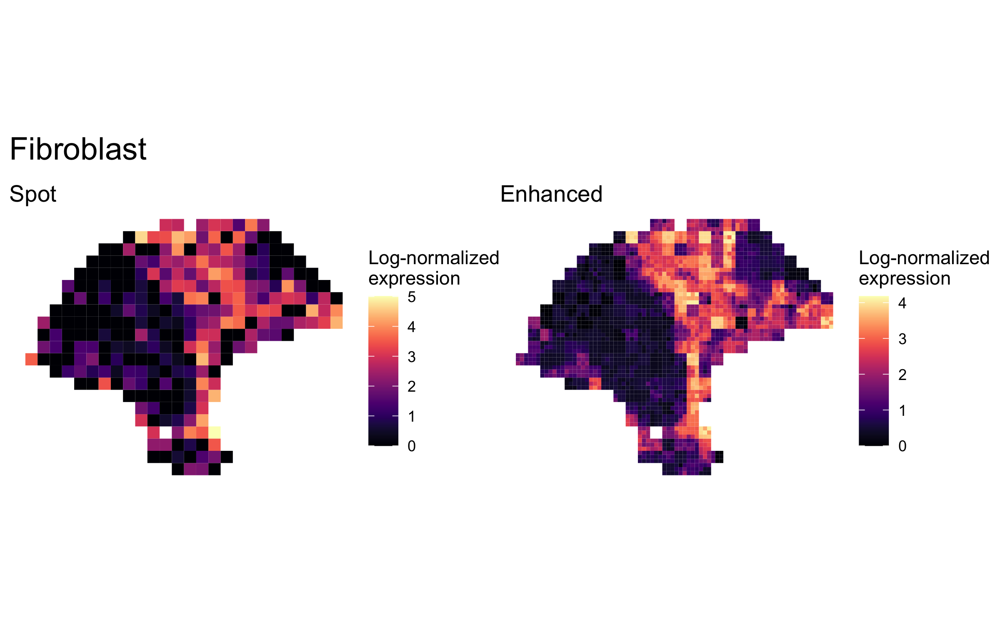
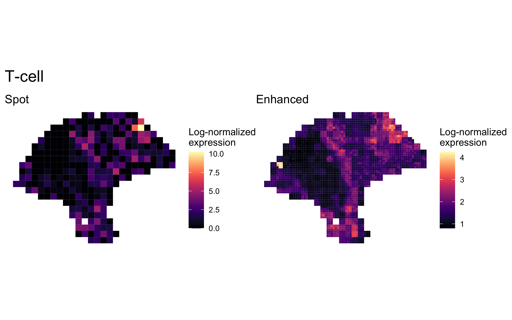
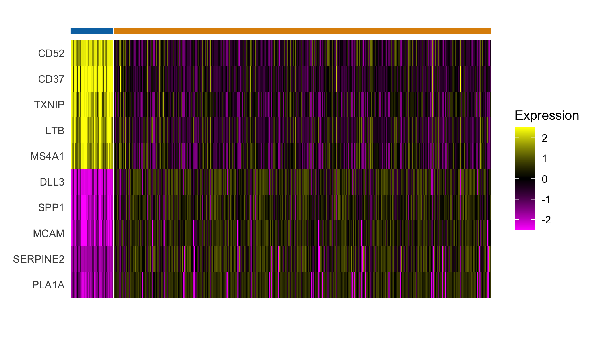

BayesSpace analysis of melanoma dataset (Thrane et al., 2018)
Edward Zhao, Matt Stone, Xing Ren, and Raphael Gottardo
Source:vignettes/thrane_melanoma.Rmd
thrane_melanoma.RmdOverview
Here we present our re-analysis of one of the melanoma samples originally reported by Thrane et al. (2018). These data were originally obtained through their website. (NOTE: Since downloading this data, the Spatial Research website has gone offline. We will update this vignette with a working link to the original data when possible. Until then, the data remains available through our getRDS() funtion below.)
Processing the data
A cleaned SingleCellExperiment object containing the dataset is available through BayesSpace. We preprocessed the data by performing PCA on the top 2,000 HVGs.
melanoma <- getRDS("2018_thrane_melanoma", "ST_mel1_rep2")
set.seed(100)
dec <- scran::modelGeneVar(melanoma)
top <- scran::getTopHVGs(dec, n = 2000)
set.seed(101)
melanoma <- scater::runPCA(melanoma, subset_row = top)
## Add BayesSpace metadata
melanoma <- spatialPreprocess(melanoma, platform="ST", skip.PCA=TRUE)
q <- 4 # Number of clusters
d <- 7 # Number of PCsClustering with BayesSpace
We clustered the first seven principal components, specifying 4 clusters, and ran the MCMC algorithm for 50,000 iterations. We generally suggest setting the smoothing parameter gamma to 2 for ST experiments and to 3 for Visium data.
## Run BayesSpace clustering
set.seed(100)
melanoma <- spatialCluster(melanoma, q=q, d=d, platform='ST',
nrep=50000, gamma=2)
## View results
palette <- c("purple", "red", "blue", "yellow", "darkblue")
clusterPlot(melanoma, palette=palette, color="black", size=0.1) +
labs(title="BayesSpace")
Enhancing resolution with BayesSpace
Next, we clustered the dataset at enhanced resolution, using the same parameters and running the algorithm for 200,000 iterations.
set.seed(100)
melanoma.enhanced <- spatialEnhance(melanoma, q=q, d=d, platform="ST",
nrep=200000, gamma=2,
verbose=TRUE, save.chain=TRUE,
jitter_scale=3.5, jitter_prior=0.3)
clusterPlot(melanoma.enhanced, palette=palette, color="black", size=0.1) +
labs(title="Enhanced clustering")
Enhancement of marker gene expression
We highlighted patterns of expression of cell type markers at both original spot and enhanced subspot resolution. First, we selected the below sets of marker genes for each of five cell types, and predicted their expression at subspot resolution using xgboost.
markers <- list()
markers[["Tumor"]] <- c("PMEL")
markers[["Fibroblast"]] <- c("COL1A1")
markers[["Macrophage"]] <- c("CD14", "FCGR1A", "FCGR1B")
markers[["B-cell"]] <- c("CD19", "MS4A1")
markers[["T-cell"]] <- c("CD2", "CD3D", "CD3E", "CD3G", "CD7")
melanoma.enhanced <- enhanceFeatures(melanoma.enhanced, melanoma,
model="xgboost",
feature_names=purrr::reduce(markers, c),
nrounds=0)Next, we aggregated the expression of marker genes within each cell type by summing their log-normalized expression.
sum_counts <- function(sce, features) {
if (length(features) > 1) {
colSums(logcounts(sce)[features, ])
} else {
logcounts(sce)[features, ]
}
}
spot_expr <- purrr::map(markers, function(xs) sum_counts(melanoma, xs))
enhanced_expr <- purrr::map(markers, function(xs) sum_counts(melanoma.enhanced, xs))And we plotted the spatial expression of each cell type’s markers at spot-level and enhanced subspot resolution using featurePlot():
plot_expression <- function(sce, expr, title) {
featurePlot(sce, expr, color=NA) +
viridis::scale_fill_viridis(option="A") +
labs(title=title, fill="Log-normalized\nexpression")
}
plot_expression_comparison <- function(cell_type) {
spot.plot <- plot_expression(melanoma,
spot_expr[[cell_type]],
"Spot")
enhanced.plot <- plot_expression(melanoma.enhanced,
enhanced_expr[[cell_type]],
"Enhanced")
(spot.plot + enhanced.plot) +
plot_annotation(title=cell_type,
theme=theme(plot.title=element_text(size=18)))
}
plot_expression_comparison("Tumor")
plot_expression_comparison("Fibroblast")
plot_expression_comparison("Macrophage")
plot_expression_comparison("B-cell")
plot_expression_comparison("T-cell")
Differential expression analysis of spatial clusters
We additionally performed a differential expression analysis between clusters of interest. We limited our analysis to the top 2,000 highly variable genes, and again we imputed their expression at enhanced resolution using xgboost.
## Using the same 2,000 HVGs previously computed for PCA, excluding ribosomal
hvgs <- top[grep("^RP[LS]", top, invert=TRUE)]
melanoma.enhanced <- enhanceFeatures(melanoma.enhanced, melanoma,
model="xgboost",
feature_names=hvgs,
nrounds=0)Next, we applied a standard Seurat differential expression analysis workflow to the enhanced resolution, finding general concordance among the histological annotations, cluster assignments, and differential gene expression.
library(dplyr)
## Convert SCE to Seurat object and use BayesSpace cluster as identifier
sobj <- Seurat::CreateSeuratObject(counts=logcounts(melanoma.enhanced),
assay='Spatial',
meta.data=as.data.frame(colData(melanoma.enhanced)))
sobj <- Seurat::SetIdent(sobj, value = "spatial.cluster")
## Scale data
sobj@assays$Spatial@scale.data <-
sobj@assays$Spatial@data %>% as.matrix %>% t %>% scale %>% t
## Select top n markers from each cluster (by log fold change)
top_markers <- Seurat::FindAllMarkers(sobj, assay='Spatial', slot='data',
group.by='spatial.cluster',
only.pos=TRUE) %>%
group_by(cluster) %>%
top_n(5, avg_logFC)
## Plot expression of markers
Seurat::DoHeatmap(sobj, features = top_markers$gene, slot='scale.data',
group.by = "spatial.cluster", group.colors=palette,
angle=0, size=4, label = FALSE, raster=FALSE) +
guides(col = FALSE)
Comparison to other clustering algorithms
We compared the BayesSpace clustering algorithm to several other clustering algorithms, some spatially informed and some non-spatial algorithms popularly used in the analysis of single-cell data. Consistently with our earlier analyses, in all cases we cluster the first seven principal components, specifying 4 clusters when necessary.
We provide the code necessary to replicate the cluster assignments obtained with mclust, k-means, and the Louvain method below. For brevity, we provide the code used to run Giotto separately (adapted from their Visium tutorial). We could not run stLearn on this particular sample as it does not include an image aligned to the expression data.
Y1.2 <- reducedDim(melanoma, "PCA")[, seq_len(d)]
## mclust (BayesSpace initialization)
library(mclust)
set.seed(100)
mclust.labels <- Mclust(Y1.2, q, "EEE")$classification
## K-means
set.seed(103)
km.labels <- kmeans(Y1.2, centers = q)$cluster
## Louvain
set.seed(100)
g.jaccard <- scran::buildSNNGraph(melanoma, use.dimred="PCA", type="jaccard")
louvain.labels <- igraph::cluster_louvain(g.jaccard)$membership
## Giotto (pre-computed)
giotto.fname <- system.file("extdata", "2018_thrane_melanoma", "ST_mel1_rep2.Giotto_HMRF.csv", package = "BayesSpace")
giotto.labels <- read.csv(giotto.fname)$HMRF_PCA_k4_b.2
Differential expression of tumor border and tumor-proximal lymphoid tissue
Finally, we performed differential expression analysis between spots in the tumor border (cluster 1, in purple, above) and the spots in the lymphoid cluster (cluster 4, in yellow, above) which appeared proximal to the tumor. We highlight the spots included in the analysis below.
label_spot <- Vectorize(function(cluster, col) {
if (cluster == 1 && col < 19) {
"Tumor border"
} else if (cluster == 4 && col < 19) {
"Lymphoid"
} else {
"Other"
}
})
DE.labels <- label_spot(melanoma.enhanced$spatial.cluster, melanoma.enhanced$col)
DE.labels <- factor(DE.labels, levels = c("Lymphoid", "Tumor border", "Other"))
clusterPlot(melanoma.enhanced, label=DE.labels, color="black", size=0.1) +
scale_fill_manual(values=c('#0173b2', '#de8f05', '#949494')) +
labs(fill="Region")
And perform the DE analysis as with the full set of clusters above.
## Add tumor proximal/border labels
sobj <- Seurat::AddMetaData(sobj, DE.labels, col.name="DE.label")
sobj <- Seurat::SetIdent(sobj, value = "DE.label")
## Subset to the two clusters of interest and re-scale
sobj <- subset(sobj, DE.label %in% c("Lymphoid", "Tumor border"))
sobj@assays$Spatial@scale.data <-
sobj@assays$Spatial@data %>% as.matrix %>% t %>% scale %>% t
## Select top n markers from each cluster (by log fold change)
top_markers <- Seurat::FindAllMarkers(sobj, assay='Spatial', slot='data',
group.by='DE.label',
only.pos=TRUE) %>%
group_by(cluster) %>%
top_n(5, avg_logFC)
## Plot expression of markers
Seurat::DoHeatmap(sobj, features = top_markers$gene, slot='scale.data',
group.by = "DE.label", group.colors=c('#0173b2', '#de8f05'),
angle=0, size=4, label = FALSE, raster=FALSE) +
guides(col = FALSE)